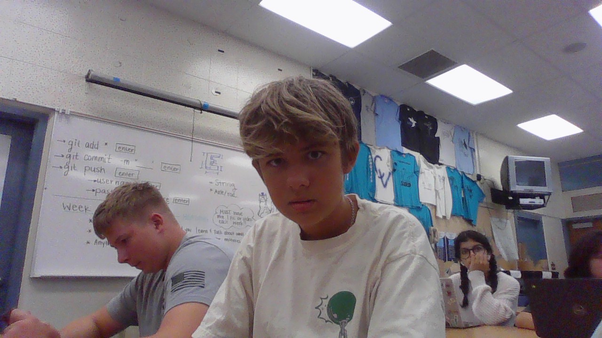
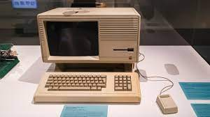
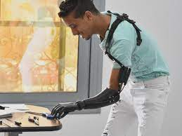
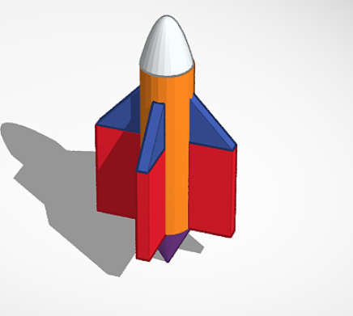

Andrew's website !?!?

8/21-24/23 Week 1
Today is Thursday. I had Living Earth and AP Hug today.
After school today I have practice for MTB. This week was pretty
easy. I also took some funny pictures of the group. We had an
experiment with the half pipes and marbles, we did pretty bad but
it was pretty fun. I look forward to more in the future.
 Week 2 : 8/27-31/23
Week 2 : 8/27-31/23
Today is Thursday again. I had my same classes and they were pretty
and easy. In AP Hug today we made our places chart and I did Mammoth
I again have practice today at 4 and we are going to mainly just do some
paperwork again. Engineering was ok today.
 Week 3 : 9/5-9/8
Today is yet again Thursday. Our construction of our "roller coaster"
Week 3 : 9/5-9/8
Today is yet again Thursday. Our construction of our "roller coaster"
is going smoothly. My group started working on our stability but not did
get too far yet. Next class we are planning on finishing our stabilizers
and starting our top portion that holds the car. We still need to work
on our idea of the pulley with the string holding the baseball. Joe was
our materials manager for today and collected the cardboard, our bucket,
and our hardboard. He let me cut a stabilizer with the box cutter.
 Week 4 : 9/11-9/15
Today we tested our roller coasters. Ours took a while but we eventually
Week 4 : 9/11-9/15
Today we tested our roller coasters. Ours took a while but we eventually
fixed it. We just had to increase the force to the needle. We also had to
extend the needle so it reached the balloon. It took us around 20 tries
and alot of deleted videos.
 Week 5 : 9/18-9/22
Week 5 : 9/18-9/22
Today we worked on our computer engineering worksheet. It was pretty easy
but I will have to watch some of the video at home. On Monday we tried to
upload videos. On Tuesday we made paper boats and saw whos could carry
the most weight. Mine lasted the full 5 mins or so. Today we filled out
the comp mech worksheet and watched the video.

week 6 9/25-9/29
Week 6. this week we worked on our computer engineering worksheet.
It was easy and we took the quiz on Thursday. I was absent Thursday
so I am updating this a week late. It is currently week 7.

Week 7 10/2-10/6
Week 7. On Monday we worked on another challenge. This was the hand.
Damon left early so I had to finish it by myself. I made a very good
hand. Thursday. TOday we worked on TinkerCad and made a prostethic
limb. We also did the biomechanical worksheet.

Week 8 10/9-10/13
Week 8. Monday. Today we took the bioengineering quiz. It was pretty hard
I think that I should have studied the careers and organizations a little
more. Today we are also going to be learning about aerospace engineering.
I think this will be a fun unit. Thursday. TOday we went on tinkercad and
created a bottle rocket design. Dominic was absent today so I sat by my-
self. It was pretty easy.

Week 9 10/16-10/20
Week 9. This week we designed, built, and tested our bottle rockets. On Monday
we designed our rockets. My partner was Dominic. On Tuesday we built our rockets
Dominic was absent for half the class so I had to take charge. I decided to use br>
mostly tape and not much hot glue. I was absent on Thursday but Dominic sent me a
video.
Week 10 10/23-10/27
Week 10. This week we worked on our water filters. I did this with Dominic. Our order
was cotton ball, pebbles, sand, and rocks. This worked rather well. It was a
pretty easy challenge but we did not have time to finish filtering the water all the way.
We learned about environmental engineering this week. It was pretty entertaining.
Week 11 10/30-11/3
Week 11. This week we started electrical engineering. It is pretty understandable
but still a bit hard. Later in the week we worked on our tinkercad labs.
I finished the first, second, and third lab pretty easily. I also understood
the volts and amps worksheet. I finished this pretty easily. Dominic
helped me with the labs which made it a lot easier.
Week 12 11/6-11/10
Week 12. This week we did the phyiscal lab for electrical engineering. We
worked on the bread boards. Dominic was my partner. He did a lot of the work
but I did a reasonable amount as well. The lab overall was pretty easy
although it took some thinking.
Week 13 11/13-11/17
Week 13. This week we did business engineering. It was very understandable.
We also learned about the trolley problem. On Thursday we did the worksheet.
we also started the Shark tank thing. We are doing an ice cream cone holder.
Week 14 11/27-12/1
Week 14. This week we finished all of our business assignments. I presented
today (Thursday) but on Tuesday we prepped for the shark tank slides. I think
that we did rather well. My favorite pitch was probably the college guide
app becasue I know how hard it is to choose a college. It was a very good
idea that I think if executed properly it would make a lot of money and be
very useful.
S2 Week 1 1/8-1/12
Week 1. This week we did chemical engineering. I finsihed the worksheet with
Dominic and it was pretty easy. I learned a lot. Earlier we did the ooblek
project and mine turned out great. I learned a lot. One thing I learned
is that you always have to know the correct amount of a chemical reaction
S2 Week 2 1/15-1/19
Week 2. This week we did project propoasals and learned about mousetrap
cars. I researched a lot. I found some new strategies to make the car go
as well. From the video I learned about weight and aerodynamics.
S2 Week 3 1/22-1/26
Week 3. This week I was absent for every day so I could not get much in
class work done. Other than that, I reasearched some more and did my
TinkerCad. This was pretty easy and I figured out my measurements. My
first plan for week 4 is to start building the car.
S2 Week 4
S2 week 5 2/5-2/9
Week 5. This week I havent finsihed my car yet so I will update with my
problems once I finish and measure.